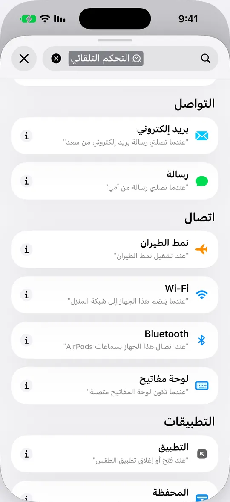
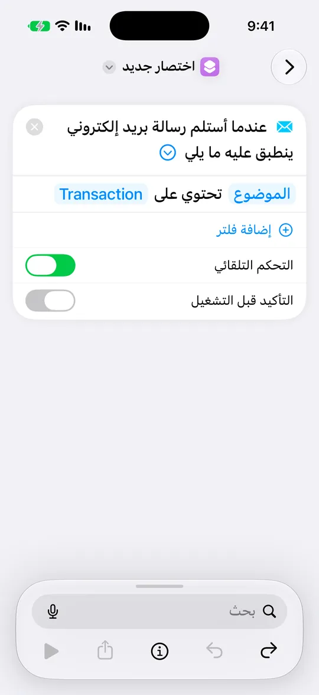
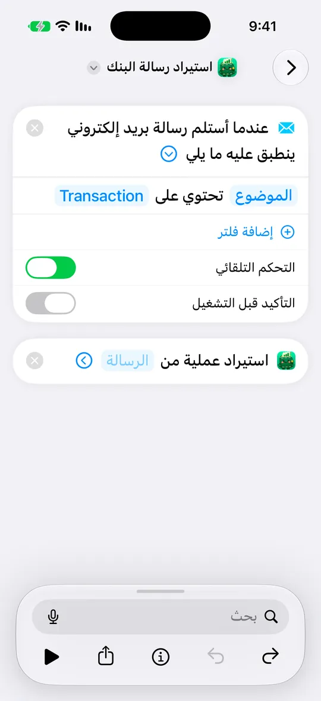
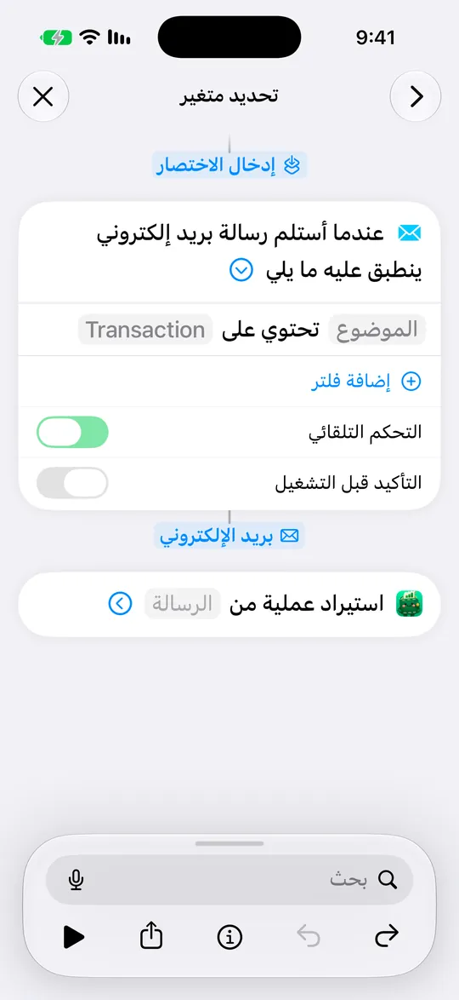
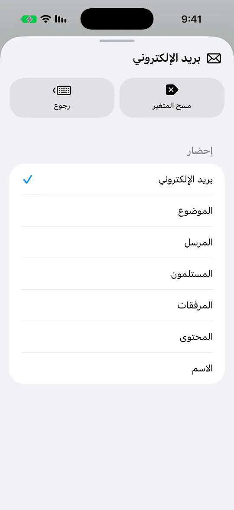
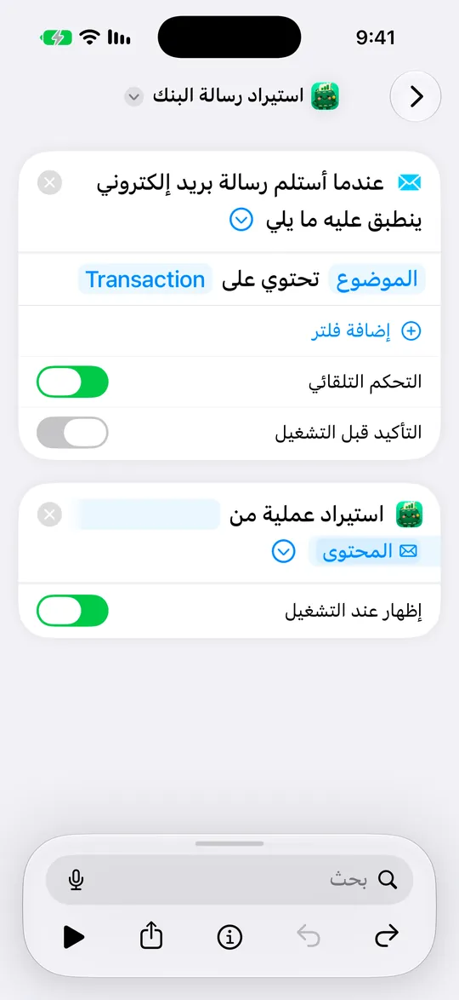

تسجيل تنبيهات البنك من البريد الإلكتروني تلقائيًا
إذا كان بنكك يرسل لك تنبيهًا بالبريد الإلكتروني مع كل عملية، فبإمكان تحكم تلقائي في «الاختصارات» أن يوصل كل تنبيه إلى TrackExpenses، تمامًا كما يفعل مع رسائل البنك النصية. الخطوة الإضافية الوحيدة: أن يكون بريدك مضافًا إلى تطبيق «البريد» من Apple، لأن «الاختصارات» لا ترى الرسائل الجديدة إلا فيه، لا في تطبيق Gmail ولا في أي تطبيق بريد آخر.
ما تحتاجه
- iPhone بنظام iOS 17 أو أحدث، وتطبيق «الاختصارات» من Apple.
- تطبيق TrackExpenses على الجهاز نفسه.
- بنك يرسل لك مع كل عملية بريدًا إلكترونيًا يذكر المبلغ.
تابع قراءة بريدك في التطبيق الذي تفضّله، فتطبيق «البريد» يكفيه أن تصله نسخة. وإن أزعجك وصول إشعارين لكل رسالة، فأوقف إشعارات «البريد» من الإعدادات ← الإشعارات ← البريد، ويبقى التحكم التلقائي يعمل.
أضف بريدك إلى «البريد»
من الإعدادات ← التطبيقات ← البريد ← حسابات البريد، اضغط «إضافة حساب» وسجّل الدخول، واختر Google إن كان بريدك على Gmail. في iOS 17 يكون المسار: الإعدادات ← البريد ← الحسابات.
تطبيق «البريد» يتحقق من Gmail على فترات، لا لحظة وصول الرسالة. لذلك اضبط «جلب بيانات جديدة» في الصفحة نفسها على كل 15 دقيقة، وهي أقصر مدة. قد تظهر العملية إذن بعد دقائق من وصول البريد، وفتح تطبيق «البريد» يجلب الجديد فورًا. وتُضاف حسابات Outlook وiCloud وغيرها بالطريقة نفسها.
اختر كلمة من عنوان التنبيه
يعمل التحكم التلقائي فقط مع الرسائل التي يتضمن موضوعها كلمة تحددها أنت. ولا تستطيع «الاختصارات» أن تفرز البريد حسب نصه، بل حسب المرسل والموضوع فقط. ولا تحدد مرسلًا، كما في إعداد رسائل البنك النصية، لأن البنوك كثيرًا ما ترسل تنبيهاتها من أكثر من عنوان. افتح ثلاثة أو أربعة تنبيهات من بنكك، واختر كلمة تتكرر في موضوع كل تنبيه ولا ترد في رسائله التسويقية، مثل Transaction أو Alert أو «عملية». ولا يمكن إنشاء التحكم التلقائي من دون أي تصفية.
أنشئ التحكم التلقائي
تختلف الخطوات بحسب إصدار iOS، ويعرضها التطبيق نفسه لإصدارك: «المزيد» ← «تسجيل رسائل البنك تلقائيًا» ← «هل يرسل بنكك الإشعارات بالبريد الإلكتروني؟».
iOS 27
اختر «بريد إلكتروني»
في الاختصارات، انتقل إلى «المكتبة» ← «التحكم التلقائي» ← +، ثم اضغط «التحكم التلقائي» واختر «بريد إلكتروني» تحت «التواصل».

صفِّ حسب الموضوع
اضغط «المرسِل» وغيّره إلى «الموضوع»، واكتب كلمتك. يبقى «التحكم التلقائي» مفعّلًا و«التأكيد قبل التشغيل» مطفأً.

أضف إجراء الاستيراد
ابحث عن TrackExpenses وأضف «استيراد رسالة البنك». حقل «الرسالة» ما زال فارغًا.

اختر الرسالة
اضغط «الرسالة» ثم «تحديد متغير»، واضغط «بريد الإلكتروني» أسفل المشغّل مباشرة.

استخدم المحتوى
اضغط متغير «بريد الإلكتروني» الذي أضفته، واختر «المحتوى».

أطفئ «إظهار عند التشغيل»
افتح الإجراء بسهمه، وأطفئ «إظهار عند التشغيل»، ثم احفظ الاختصار.

iOS 26 والإصدارات الأقدم
- في الاختصارات، اضغط «التحكم التلقائي» ثم + واختر «بريد إلكتروني».
- اضغط «الموضوع يتضمن» واكتب كلمتك. اختر «تشغيل مباشرة»، ثم «التالي» و«إنشاء اختصار جديد» (وفي iOS 18 وما قبله: «تحكم تلقائي فارغ جديد»).
- أضف «استيراد رسالة البنك». اضغط حقل «الرسالة» ← «تحديد متغير» ← «إدخال الاختصار».
- أطفئ «إظهار عند التشغيل» واحفظ التحكم التلقائي.
اسم الإجراء «استيراد رسالة البنك»، لكنه يقرأ رسائل البريد بالطريقة نفسها. وإن بقي حقل «الرسالة» فارغًا فلن يجد الإجراء ما يقرؤه، فلا بد أن يظهر فيه المتغير.
جرّب قبل أول عملية
انسخ نص أحد التنبيهات من بريدك. ثم افتح في TrackExpenses «المزيد» ← «تسجيل رسائل البنك تلقائيًا»، والصقه في بطاقة «جرّب إحدى رسائل بنكك». سترى فورًا ما سيفعله التحكم التلقائي به: المبلغ والمتجر والحساب، أو سبب تخطيه للرسالة. ولا يُحفظ شيء.
وبعد أول تنبيه حقيقي، تعرض الصفحة نفسها في «النشاط الأخير» ما سُجّل وما تُخطّي، ولماذا. وإن لم يظهر شيء على الإطلاق، فالسبب في المشغّل: الكلمة في الموضوع، أو أن «البريد» لم يجلب الرسالة بعد.
أمور يجدر معرفتها
- إذا لم يذكر البريد المبلغ، واكتفى بعبارة مثل «لديك تنبيه جديد، سجّل الدخول لعرضه»، فلا شيء يمكن تسجيله.
- كل رسالة بريد تعطي عملية واحدة. الملخص اليومي الذي يجمع عدة عمليات لا يُقسَّم، وكشوف الحساب بصيغة PDF لا تُقرأ.
- تُقرأ رسائل البريد بالقواعد نفسها التي تُقرأ بها الرسائل النصية: تُتخطى رموز التحقق والمدفوعات المرفوضة والعروض، والشراء بعملة أخرى ينتظر سعر الصرف الذي تحدده، وتُعلَّم العمليات المكررة المحتملة.
- إن كان البنك يرسل لك المشتريات نفسها برسائل نصية أيضًا، فاكتفِ بطريقة واحدة، وإلا وصلت كل عملية مرتين.
- تُحسب عمليات البريد من الحصة نفسها التي تُحسب منها الرسائل النصية: 10 عمليات ناجحة مجانًا كل شهر ميلادي على كل جهاز، وبلا حد مع Pro.
الخصوصية
لا تمرر «الاختصارات» إلا الرسائل التي تطابق التصفية التي اخترتها، ولا تمرر منها إلا محتواها. يقرأ TrackExpenses النص على جهازك ويحفظ العملية التي وجدها، لا الرسالة نفسها، ولا يسجّل الدخول إلى بريدك ولا إلى بنكك.
أسئلة شائعة
هل يستطيع TrackExpenses قراءة تطبيق Gmail مباشرة؟
لا. مشغّل «بريد إلكتروني» في «الاختصارات» لا يرى إلا ما يصل إلى تطبيق «البريد» من Apple، لذا أضف حساب Gmail إليه.
لماذا الموضوع وليس المرسل؟
كما في إعداد الرسائل النصية، العبرة بصياغة البنك لا بمن أرسل. البنوك ترسل التنبيهات غالبًا من أكثر من عنوان، أما الموضوع فيبقى ثابتًا.
لماذا وصلت العملية متأخرة؟
لأن «البريد» يجلب رسائل Gmail على فترات. اضبط «جلب بيانات جديدة» على كل 15 دقيقة، أو افتح تطبيق «البريد».
بنكي يرسل الإشعارات داخل تطبيقه فقط، فما الحل؟
لا تستطيع «الاختصارات» قراءة إشعارات التطبيقات الأخرى. لمشتريات Apple Pay يوجد مشغّل «المعاملة»، ويمكنك دائمًا لصق أي تنبيه في TrackExpenses بنفسك.
للمزيد
تسجيل رسائل البنك النصية تلقائيًا: دليل الإعداد بالصور
TrackExpenses بالعربية: كل الميزات
بالإنجليزية: Import bank email alerts on iPhone
مصاريفك أوضح، وشهرك تحت نظرك.
تتبع المصاريف: ميزانية الراتب، لـ iPhone وiPad.
5.0 من 5 في App Store · عدد التقييمات: 7 · حتى 17 نوفمبر 2026
معلومات التطبيق وحدود المجاني وPro
تتبع المصاريف: ميزانية الراتب (TrackExpenses) تطبيق من تطوير Mohamed Elatabany لأجهزة iPhone وiPad بنظام iOS وiPadOS 17 أو أحدث، بالعربية والإنجليزية والألمانية وبواجهة عربية كاملة من اليمين إلى اليسار. لا يتطلب حسابًا في التطبيق ولا الدخول إلى حسابك البنكي. تحكم تلقائي اختياري في «الاختصارات» يسجّل تنبيهات البنك المدعومة ومشتريات المحفظة، والتطبيق لا يقرأ صندوق رسائلك. الإدخال الصوتي يُنشئ مسودات على جهازك نفسه، في الأجهزة واللغات التي تدعمه. السجلّ المجاني يشمل عمليات يدوية بلا حدود، والميزانيات ونقل المال بينها في الفترة الحالية، والإحصاءات والبحث والمزامنة عبر iCloud الخاص بك، مع 3 حسابات وقاعدتي تكرار، و10 إدخالات صوتية محفوظة و10 رسائل بنكية ناجحة كل شهر ميلادي على كل جهاز. المدرّب المالي يقرأ آخر شهر ميزانية ويقترح حدًّا واحدًا، وأسئلته المفتوحة تذهب إلى Claude من Anthropic عبر خادم وسيط للمطوّر بعد موافقة المستخدم فقط، مع ما سبق في المحادثة وملخص لهذا الشهر والشهر الماضي، وعند طلب المدرّب مجاميع حتى 13 شهرًا أو حتى 20 عملية شراء بتاريخها ومتجرها وفئتها ومبلغها، ودون الملاحظات أو الإيصالات أو أسماء الحسابات وأرقامها أو الأرصدة (10 أسئلة مجانًا كل شهر على كل جهاز). التنبيهات التي تتجاوز الحصة المجانية تُحفظ خارج المجاميع ولا تُحذف: يضيفها كلها Pro، وإلا فحصة الشهر التالي تضيف منها بقدر ما تتسع. يضيف Pro الإدخال الصوتي وتسجيل رسائل البنك والحسابات والعمليات المتكررة بلا حدود، وتحدّيات المدرّب، وخطة الراتب، والتوقعات والميزانية اليومية، وتصدير CSV لأي فترة واستيراده والنسخ الاحتياطي الكامل، والسمات والأيقونات البديلة، باشتراك شهري أو سنوي أو بشراء لمرة واحدة. الأرقام والتوقعات مبنية على ما تسجّله، وليست نصيحة مالية.